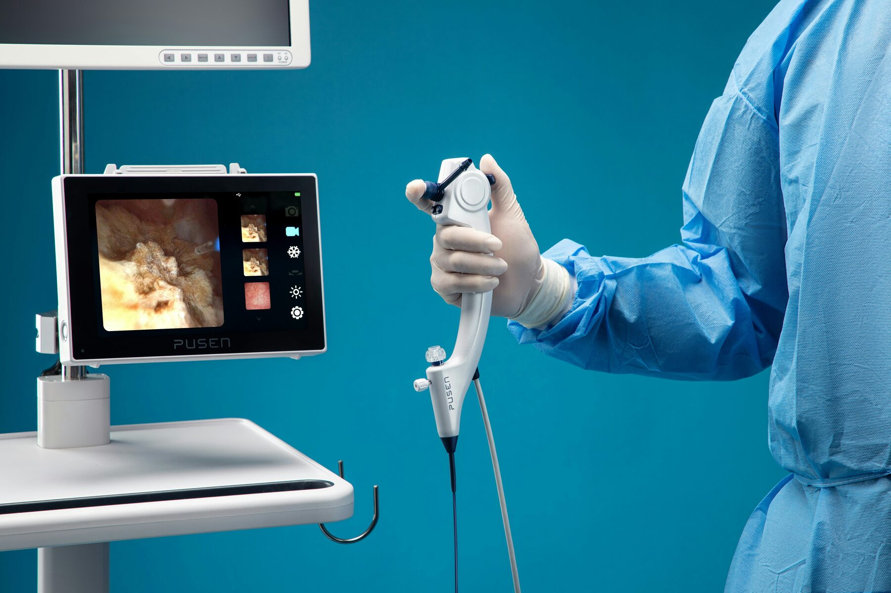

Private specialist clinic in Ado-Ekiti, Ekiti State
Clear answers for your gut and liver. Gentle care for you.
G.I. Endoscopy Clinic brings consultant-led gastroenterology, hepatology and endoscopy to Ado-Ekiti, with Olympus CV-180 high-definition imaging. Your wellbeing is our desire.
No referral needed for a consultation. We will guide you from your first call.
Olympus CV-180High-definition GI imaging
“Your wellbeing is our desire.”
The promise behind our care
Olympus CV-180 imaging
High-definition views of the GI lining for a more confident diagnosis.
Specialist-led care
Gastroenterology and hepatology expertise, from consultation to follow-up.
Private and local
Confidential care in Ado-Ekiti, without travelling outside Ekiti State.
One clinic, complete careGastroenterology & hepatology
About the clinic
Specialist care, without the cold hospital feel.
G.I. Endoscopy Clinic is a private healthcare facility dedicated to digestive and liver health in Ado-Ekiti. We combine modern endoscopic technology with unhurried, respectful attention, so it is easier to ask questions and understand your own health.
Every procedure is performed with careful technique and clear communication. You will know what is happening, why it matters, and what comes next.
Consultant-led
Specialist assessment and procedures, not a revolving door.
Plain explanations
Findings and next steps explained in language that makes sense.
Confidential by default
Private consulting and discreet handling of your records.
Close to home
Modern GI care in Ado-Ekiti, so follow-up is easier to keep.
Your wellbeing is our desire.
The G.I. Endoscopy Clinic team
What we do
Procedures, explained in plain language.
Whether you have a symptom to investigate or a screening to arrange, we will help you choose the right next step.
Upper digestive tract
Upper GI endoscopy (OGD)
A short examination of the oesophagus, stomach and upper small intestine using a slim, flexible scope. It helps us look directly at the lining and take a sample if needed.
Planned checks for people at higher risk, or with a condition that needs watching. We agree a follow-up schedule that fits your history and explain what each check is looking for.
A dedicated one-to-one appointment for digestive symptoms or liver health. We review your history, examine you, and build a clear plan together. If a procedure is not necessary, we will tell you.
Our Olympus CV-180 series endoscopy system gives us high-definition views of the gastrointestinal mucosa. For you, that means a clearer look at the lining of your gut, greater confidence in the diagnosis, and support for precise therapeutic work when it is needed.
High-definition mucosal imaging
Fine detail is easier to see, which supports earlier detection.
Diagnostic confidence
Clearer views help your specialist interpret findings with greater certainty.
Therapeutic capability
Supports treatment of certain conditions during the same session, where appropriate.
Care in Ekiti
Modern endoscopic care without the cost and stress of travelling out of state.

Olympus CV-180 seriesHigh-definition endoscopy
Equipment is only part of the story. Technique, preparation and careful follow-up matter just as much.
Patient guide
Know what to expect, before you arrive.
A little preparation makes the visit calmer for everyone. Here is the general path. Your care team will confirm the details for your specific procedure.
1
Request your appointment
Call, send a WhatsApp message, or use the form on this page. We will confirm a suitable time and answer your first questions.
2
Receive your instructions
We send clear preparation guidance. This may include fasting, adjusting certain medicines, or bowel preparation for a colonoscopy.
3
Attend your appointment
You will meet the team, have a chance to ask questions, and be talked through the procedure. Comfort measures are explained before we begin.
4
Understand your results
Your findings are explained, a report is provided, and any follow-up or treatment is arranged.
Common questions
The questions patients ask us most.
If yours is not here, call or message us. We would rather answer it than have you worry.
Most people describe pressure or discomfort rather than pain. For an upper GI endoscopy, the throat is usually numbed with a spray, and sedation can be arranged where appropriate. The examination itself is typically brief, and we explain each step as it happens.
Preparation depends on the procedure. Upper GI endoscopy usually requires fasting for several hours beforehand. A colonoscopy requires bowel preparation. You receive written instructions when your appointment is confirmed, and we are available to answer questions.
No. You can book a consultation directly. If your doctor has referred you, bring the referral letter and any recent test results with you.
Most diagnostic procedures take a short time, although the full visit may take longer because of preparation and recovery. Many patients go home the same day. If sedation is used, arrange for a trusted adult to accompany you home.
Yes. Your consultation, records and results are handled confidentially by our clinical team.
Bring a valid ID, your referral letter if you have one, a list of your current medicines, and any recent test results. If sedation is planned, bring a trusted adult to accompany you home.
Appointments
Book your visit.
Send a request and our team will confirm by phone or WhatsApp. For same-day questions, calling is fastest.
Your wellbeing is our desire.
Visit us
Ifelere Avenue, State Housing Estate,
Off Afao Road, Ado-Ekiti,
Ekiti State, Nigeria.
Get directions